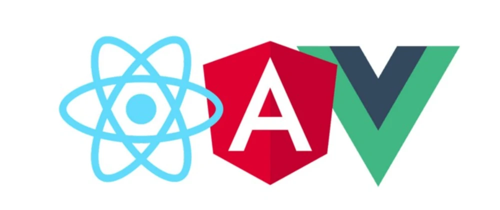
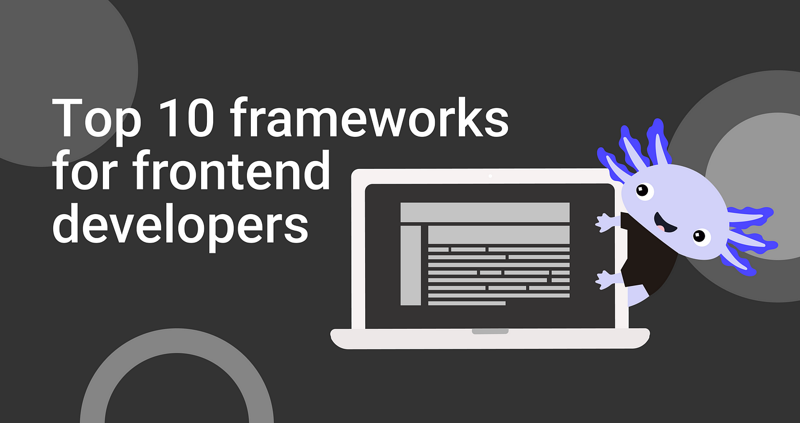

Definición
Un framework frontend es una herramienta o conjunto de herramientas que proporciona una estructura y funcionalidades predefinidas para facilitar el desarrollo de aplicaciones web del lado del cliente (frontend).
Estos frameworks están diseñados para ayudar a los desarrolladores a crear interfaces de usuario más rápidas, eficientes y consistentes.
Algunas de las características comunes de los frameworks frontend incluyen:
1. Organización del código: Los frameworks proporcionan una estructura organizativa para el código, lo que facilita la creación y mantenimiento de aplicaciones.
2. Componentes reutilizables: Muchos frameworks frontend permiten la creación de componentes reutilizables. Estos componentes pueden incluir elementos de interfaz de usuario, como botones, formularios, barras de navegación, etc.
3. Manejo del estado: Los frameworks a menudo ofrecen soluciones para gestionar el estado de la aplicación, facilitando el seguimiento de los cambios en los datos y la actualización dinámica de la interfaz de usuario en consecuencia.
4. Enrutamiento: Proporcionan sistemas de enrutamiento que facilitan la navegación dentro de la aplicación, permitiendo cargar diferentes vistas o componentes según la URL.
5. Interfaz de programación de aplicaciones (API): Muchos frameworks ofrecen API que simplifican la interacción con servicios web y facilitan la gestión de solicitudes HTTP.
Algunos ejemplos populares de frameworks frontend incluyen Angular, React y Vue.js. Estos frameworks son ampliamente utilizados en la industria para desarrollar aplicaciones web modernas y escalables.

¿Qué es un marco?
En el contexto de desarrollo de software, el término "marco" (o "framework" en inglés) se refiere a una estructura conceptual y técnica que proporciona un entorno para facilitar el desarrollo de software.
Un marco es esencialmente un conjunto de herramientas, reglas y convenciones que ayudan a los desarrolladores a construir aplicaciones de manera más rápida y eficiente.
Algunos de sus aspectos clave son:
1. Estructura y Organización: Un marco proporciona una estructura predefinida para el desarrollo de aplicaciones. Define cómo se deben organizar los archivos y carpetas, cómo interactúan los componentes y cómo fluye la lógica de la aplicación.
2. Reutilización de Código: Los marcos suelen incluir bibliotecas de código y componentes reutilizables que los desarrolladores pueden utilizar en sus aplicaciones. Esto promueve la reutilización del código, lo que ahorra tiempo y esfuerzo.
3. Patrones de Diseño: Los marcos a menudo adoptan patrones de diseño probados y buenas prácticas de programación. Esto ayuda a los desarrolladores a escribir código más limpio y mantenible.
4. Abstracción de Tareas Comunes: Los marcos a menudo abstraen tareas comunes, como la manipulación del DOM (Document Object Model), la gestión del estado de la aplicación, la manipulación de datos, etc. Esto permite a los desarrolladores centrarse más en la lógica específica de su aplicación.
5. Inversion of Control (IoC) y Contenedor de Inyección de Dependencias (DI): Algunos marcos implementan IoC y DI, lo que significa que el control del flujo de ejecución se invierte, y la gestión de las dependencias se realiza a través de un contenedor que facilita la inyección de dependencias.
6. Facilita la Escalabilidad: Los marcos están diseñados para facilitar la escalabilidad de las aplicaciones. Proporcionan una base sólida para el crecimiento futuro y la adición de nuevas características.
Ejemplos de marcos populares incluyen Angular, React, Vue.js (para desarrollo frontend), Django y Ruby on Rails (para desarrollo backend), entre muchos otros. Estos marcos son utilizados en una variedad de proyectos para acelerar el desarrollo y mantener la coherencia en la estructura y la arquitectura de las aplicaciones.

Top 10 Frameworks Frontend
1. React.js: Desarrollado y mantenido por Facebook, React es una biblioteca de JavaScript para construir interfaces de usuario interactivas. Se centra en la construcción de componentes reutilizables.
2. Angular: Mantenido por Google, Angular es un framework completo que facilita la construcción de aplicaciones web complejas. Utiliza TypeScript y sigue el patrón de diseño MVC (Model-View-Controller).
3. Vue.js: Un framework progresivo de JavaScript que es fácil de integrar en otros proyectos. Vue.js es conocido por su flexibilidad y enfoque gradual, lo que significa que puedes adoptarlo de manera incremental en tus proyectos existentes.
4. Svelte: A diferencia de otros frameworks que realizan el trabajo en tiempo de ejecución, Svelte traslada la mayor parte del trabajo al tiempo de compilación. Esto puede conducir a aplicaciones más eficientes y rápidas.
5. Next.js: Construido sobre React.js, Next.js es un framework que facilita la creación de aplicaciones web React con características como renderización del lado del servidor (SSR) y generación de sitios estáticos.
6. Nuxt.js: Similar a Next.js pero basado en Vue.js, Nuxt.js es un framework que facilita el desarrollo de aplicaciones Vue.js con características como renderización del lado del servidor y generación de sitios estáticos.
7. Ember.js: Un framework frontend que sigue la convención sobre la configuración. Ember.js proporciona una estructura robusta y convenciones que aceleran el desarrollo.
8. Backbone.js: Un framework liviano que proporciona estructuras para desarrollar aplicaciones web y aplicaciones de una sola página (SPA) con una arquitectura minimalista.
9. Alpine.js: Un framework de JavaScript minimalista que se centra en la manipulación del DOM directamente en el marcado HTML. Es ideal para aplicaciones pequeñas y para agregar interactividad a las páginas web.
10. **Mithril:** Un framework JavaScript para construir interfaces de usuario de una manera simple y eficiente. Es conocido por su tamaño pequeño y su rendimiento rápido.
